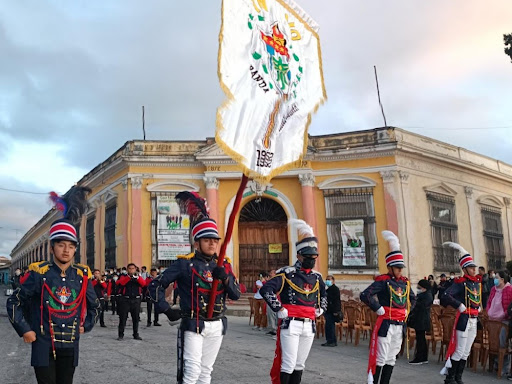

Quetzaltenango, también conocida como Xelajú o simplemente Xela, es la segunda ciudad más importante de Guatemala y la capital del departamento de Quetzaltenango. Está ubicada en la región occidental del país, a unos 2,333 metros sobre el nivel del mar, en un valle rodeado de montañas y volcanes. Con una rica herencia cultural y colonial, Quetzaltenango es un centro económico, cultural y educativo en Guatemala.

Es conocida por su tradición de celebrar la feria de “Feria de la Independencia” que ocurre cada 15 de septiembre, en conmemoración de la independencia de Guatemala.